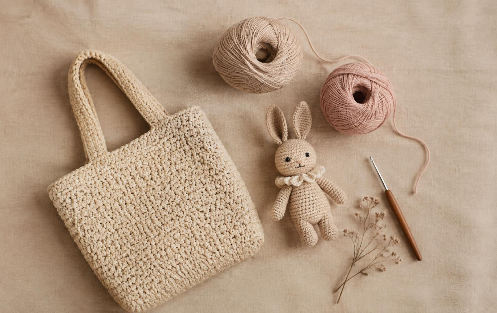

Thủ công · Từng mũi len
Mềm mại, chậm rãi, và làm bằng tay.
Những món đồ móc len nhỏ xinh cho bạn và người thương
mỗi sản phẩm là duy nhất.

Sản phẩm
Xem tất cả →Chia sẻ từ KellyCrochet
Góc đan móc
Một vài mẹo nhỏ để bạn bắt đầu với len sợi và chăm sóc món đồ thủ công yêu thích.

Bắt đầu từ sợi len
Chọn len thế nào cho món đồ đầu tiên?
Phân biệt cotton, acrylic và cách chọn sợi theo mục đích sử dụng.
Đọc hướng dẫn
Dành cho người mới
Những mũi móc cơ bản để bắt đầu
Làm quen với mũi bính, mũi đơn và cách đọc hướng dẫn đơn giản.
Đọc hướng dẫn
Giữ đồ bền đẹp
Chăm sóc đồ len đúng cách
Giặt nhẹ nhàng, phơi đúng cách và cất giữ để đồ len luôn đẹp.
Đọc hướng dẫn